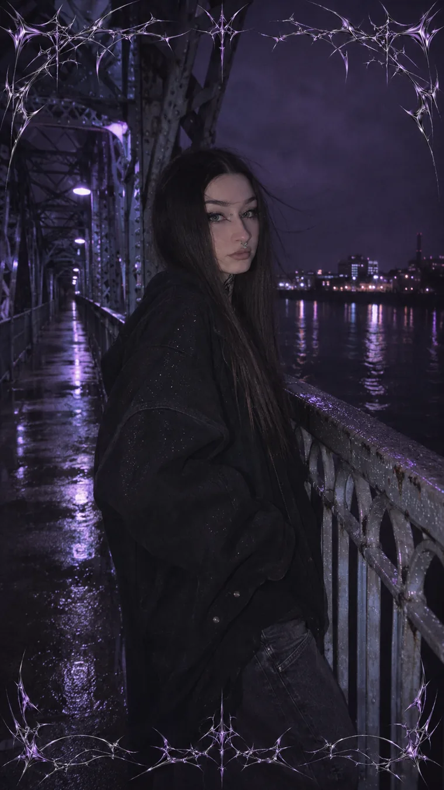

Modlitwy po północy
Modlitwa na ostatni tramwaj
Niech ostatni tramwaj jeszcze chwilę nie odjeżdża.
Niech szyba zapamięta światła, które uciekły za szybko.
I niech ta jedna piosenka starczy na całą drogę do domu.
Litania ze Spóźnionego Słowika
Za kawę, która wystygła, zanim skończyła się rozmowa.
Za lampę, która wciąż świeci nad pustym krzesłem.
Za wszystkie „jeszcze pięć minut”, które mogły trwać dłużej.
Modlitwa na deszcz
Niech pada jeszcze chwilę.
W mokrym asfalcie nawet ta sama ulica wygląda jak wspomnienie.
Gdy zgasną latarnie, zostaw mi fiolet.
Kadry po zmroku
Stylizowane portrety stworzone do memów i editów.